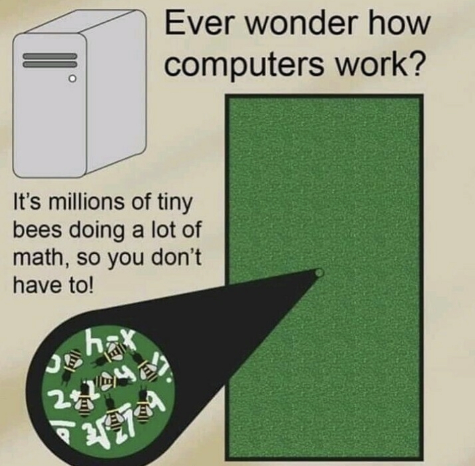

Introduction
This is intended to be a constantly evolving list of R resources that I have found helpful, informative, and maybe even fun - or that I intend to check out or use in the future. If they’re of benefit to you in any way that is great. But truth be told, this is supposed to be of utility for myself, or at the very least a bit of documentation to see where my interest has been caught.
I came across most of these resources on Mastodon via the creator or a reblogger. Others I picked up from the excellent R Weekly podcast. Yet more are recommendations from my colleagues, or treasures discovered during the bouts of frantic googling that is my job as a technical analyst.

Pretty pictures
Data Imaginist
Website of self-described “classic generative art weirdo” Thomas Lin Pedersen. Author of:
{ggfx} - “a (currently experimantal) package that allows the use of various filters and shaders on ggplot2 layers”
{patchwork} - combine separate ggplots and raster images into the same graphic. I plan to use this with a plot of Twitter employee reviews, placing an image of Elon Musk above the point at which the review scores absolutely tank in late October 2022

ART FROM CODE
Amazing-looking workshop by the incredible artist, educator, and general boon to the R community, Danielle Navarro. Originally from rstudio::conf2022, this is an R generative art workshop. Beautifully presented materials. Working my way through as a total genart newb as of late Jan ’23. I hope to blog about my experience of going through the materials!
Geospatial
I’ve made one interactive map and it was mainly done with boilerplate code, so please forgive any imprecision in the wording below!
Open Geography Portal (ONS)
I found the GB ward boundaries shapefile very useful for work recently. It contains not just the spatial data for drawing polygons on maps, but also fields like LAD codes/names, which can be used as join keys with other public datasets such as those on the DWP’s Stat-Xplore.
{sf}
This seems to be one of the main geospatial data packages in R. Apparently it’s all about “spatial data simplified”, which I guess is a play on the whole simple features thing. To be honest I could only get it working in the most absolutely simple scenario. I found the docs far, far too daunting for the speed I had to operate for work, and in the end it was (unsurprisingly) google and Stack Overflow that got me sorted. I’m a rank novice with geospatial stuff so my struggle is more a comment on my knowledge than the sf docs themselves.
{leaflet}
Leaflet is an open-source JavaScript library for making interactive maps. And of course, there is an R binding, because people are wonderful 😭. It was surprisingly straightforward once I had my spatial data in. Thankfully there are some excellent examples on the package site, and as I needed to make a choropleth (not that I knew it was called that) for a Shiny app, I just stole the example code and tweaked it for my own purposes!
Teaching
Ten quick tips for teaching with (participatory) live coding (online)
A blog post by Yanina Bellini Saibene. I can’t help but wonder if the internal R trainings I delivered for analysts at Policy in Practice would have benefited from a fully-fledged participatory approach. A lot to learn from this compendium of well-presented tips based on collected and personal experience, plus guidelines from several organisations.